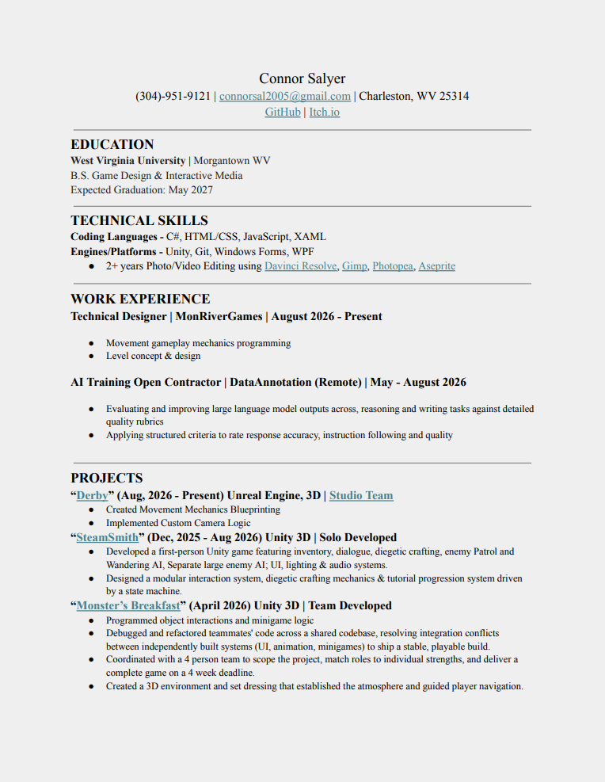

I'm currently a senior Game Design & Interactive Media student and a member of the nonprofit studio MonRiverGames, where I'm working on Derby.
I'm also a solo developer with experience across the game development pipeline, though my main specialty is systems design.
I enjoy building modular systems and mechanics that can work together in different ways, while always keeping polish and the player's experience in mind.
I also enjoy prototyping quickly and turning ideas into something playable as fast as possible, then refining those ideas into stable, interconnected systems.
My creative journey actually started with video editing, which began as a hobby and eventually made me realize how much I enjoy the process of creating things.
That interest led me into game development and programming, and I quickly fell in love with the combination of creativity and problem-solving that comes with making games.
I've always loved games, but I became even more interested in understanding how they're built and finding ways to make my own ideas possible.

Refer to Resume